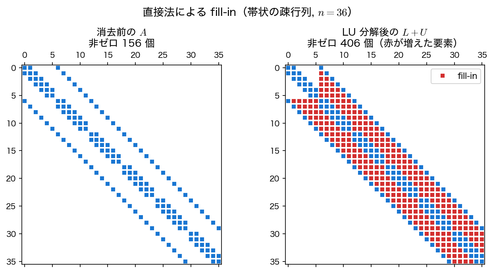

直接法
直接法（direct method）は、有限回の四則演算で連立1次方程式 \(A\mathbf{x} = \mathbf{b}\) の厳密解（丸め誤差を除く）を求める方法である。ここでは最も基本的なガウスの消去法と、その発展である LU 分解を扱う。
ガウスの消去法
ガウスの消去法（Gaussian elimination）は、行に関する基本変形によって係数行列を上三角行列に変形し（前進消去）、続いて下の行から順に未知数を求める（後退代入）方法である。
前進消去
第 \(k\) 列について、第 \(k\) 行を使って第 \(k+1\) 行以降の第 \(k\) 列要素を消去する。第 \(i\) 行（\(i > k\)）に対して乗数
を計算し、第 \(i\) 行から「乗数 \(\times\) 第 \(k\) 行」を引く。成分で書けば
であり、右辺も係数行列と同じ乗数で同時に更新する。これを \(k = 1, 2, \dots, n-1\) について繰り返すと、\(A\mathbf{x} = \mathbf{b}\) は上三角系 \(U\mathbf{x} = \mathbf{c}\) に変わる。\(a_{kk}\) をピボット（pivot）と呼ぶ。
後退代入
上三角化された系 \(U\mathbf{x} = \mathbf{c}\) は、最後の行 \(x_n = c_n / u_{nn}\) から順に
で解ける。
LU 分解
行の入れ替えを行わない前進消去の過程は、係数行列を下三角行列 \(L\) と上三角行列 \(U\) の積に分解すること、すなわち
と等価である。ここで \(L\) の対角成分は \(1\)、対角より下の成分は乗数 \(m_{ik}\) である。一度 \(A = LU\) を求めておけば、右辺 \(\mathbf{b}\) が変わっても
の2段階で \(O(n^2)\) の計算量で解ける。同じ係数行列で右辺だけが異なる問題を繰り返し解く場合に有利である。
ピボット選択と \(PA = LU\)
ピボット \(a_{kk}\) がゼロになると乗数が計算できず、ゼロに近いと丸め誤差が増幅される。これを避けるため、第 \(k\) 列で絶対値が最大の行を選んでピボット行と入れ替える部分ピボット選択（partial pivoting）を行うのが標準である。本ページのサンプルコードもこれを実装している。
行を入れ替えると、得られる分解はもはや \(A = LU\) ではない。入れ替えを表す置換行列（permutation matrix）\(P\) を使って
となる。これを使って解くときは、右辺にも同じ入れ替えを施して \(L\mathbf{y} = P\mathbf{b}\)、\(U\mathbf{x} = \mathbf{y}\) とする。実装上は「どの行とどの行を交換したか」をピボット列 piv[] として保存しておけばよく、\(P\) を行列として持つ必要はない。
なお、\(A\) が対称正定値または狭義対角優位（各行で \(|a_{ii}| > \sum_{j \neq i} |a_{ij}|\)）なら部分ピボット選択なしでも消去が破綻せず数値的に安定であることが知られている。本ページの例題（\(\operatorname{tridiag}(-1,2,-1)\)）は対称正定値である（対角優位性のほうは内側の行で等号になるため狭義ではない）ので、実際には一度も行が入れ替わらず \(P = I\)、\(PA = LU\) が \(A = LU\) に一致する。
計算量と fill-in
ガウスの消去法の計算量は \(O(n^3)\) であり、\(n\) が大きいと急激に増大する。さらに深刻なのが、疎行列に直接法を適用するともとはゼロだった要素が消去の途中で非ゼロになる現象、すなわち fill-in である。

fill-in が起こると、せっかくの疎性が失われ、メモリと計算量が増大する。次元 \(n\) が非常に大きい問題では、これを回避できる反復法が有力になる。
三重対角行列の場合
三重対角行列に限れば fill-in は起こらず、専用のガウス消去法（トーマス法、Thomas algorithm）で \(O(n)\) の計算量で解ける。疎行列でも構造が単純なら直接法が依然として強力である。
アルゴリズム
入力: 行列 A (n×n), 右辺 b
出力: 解 x
# 前進消去（部分ピボット選択つき）
for k = 1, 2, ..., n-1:
第 k 列で |a_{ik}| (i >= k) が最大の行 p を選び、第 k 行と入れ替える
for i = k+1, ..., n:
m = a_{ik} / a_{kk}
第 i 行 = 第 i 行 - m × 第 k 行
b_i = b_i - m × b_k
# 後退代入
for i = n, n-1, ..., 1:
x_i = (b_i - Σ_{j>i} a_{ij} x_j) / a_{ii}
サンプルコード
共通の例題である三重対角系（\(n = 10\)）を、部分ピボット選択つきのガウス消去法で解く。得られた解を厳密解 \(x_i = i(n+1-i)/2\) と比較する。前進消去と後退代入は関数 gauss_solve にまとめておく。
行列は2次元配列ではなく、長さ \(n^2\) の1次元配列に1行ずつ順に詰め（行優先）、第 i 行第 j 列（添字は 0 始まり）の要素を A[i*n + j] で表す。こうすると、次元 n を引数で受け取る1つの関数がどの \(n\) の行列にも使える。引数を double A[n][n] と書いても同じことができるが、これは可変長配列であり、Visual Studio のコンパイラ（MSVC）ではコンパイルできない。
#include <stdio.h>
#include <math.h>
#define N 10 /* 三重対角 SPD 系の次元 */
/* A = tridiag(-1, 2, -1), b = (1, ..., 1)^T を構築する */
void build(int n, double A[], double b[])
{
int i, j;
for (i = 0; i < n; i++) {
for (j = 0; j < n; j++) A[i*n + j] = 0.0;
b[i] = 1.0;
A[i*n + i] = 2.0;
if (i > 0) A[i*n + i - 1] = -1.0;
if (i < n - 1) A[i*n + i + 1] = -1.0;
}
}
/* 部分ピボット選択つきガウスの消去法で A x = b を解く（A と b は書き換わる） */
void gauss_solve(int n, double A[], double b[], double x[])
{
int i, j, k, p;
/* --- 前進消去（部分ピボット選択つき） --- */
for (k = 0; k < n; k++) {
/* 第 k 列で絶対値最大の行をピボットに選ぶ */
p = k;
for (i = k + 1; i < n; i++)
if (fabs(A[i*n + k]) > fabs(A[p*n + k])) p = i;
if (p != k) {
for (j = 0; j < n; j++) {
double t = A[k*n + j];
A[k*n + j] = A[p*n + j];
A[p*n + j] = t;
}
double t = b[k]; b[k] = b[p]; b[p] = t;
}
/* 第 k 行を使って下の行を消去する */
for (i = k + 1; i < n; i++) {
double m = A[i*n + k] / A[k*n + k];
for (j = k; j < n; j++) A[i*n + j] -= m * A[k*n + j];
b[i] -= m * b[k];
}
}
/* --- 後退代入 --- */
for (i = n - 1; i >= 0; i--) {
double s = b[i];
for (j = i + 1; j < n; j++) s -= A[i*n + j] * x[j];
x[i] = s / A[i*n + i];
}
}
/* 厳密解 x_i = i(n+1-i)/2 との最大誤差 */
double max_error(int n, double x[])
{
int i; double emax = 0.0;
for (i = 0; i < n; i++) {
double xe = (i + 1) * (n - i) / 2.0; /* (i+1)(n+1-(i+1))/2 */
double e = fabs(x[i] - xe);
if (e > emax) emax = e;
}
return emax;
}
int main(void)
{
double A[N*N], b[N], x[N];
int i;
build(N, A, b);
gauss_solve(N, A, b, x);
/* --- 厳密解 x_i = i(N+1-i)/2 と比較 --- */
printf(" i x_i (数値) x_i (厳密)\n");
for (i = 0; i < N; i++) {
double xe = (i + 1) * (N - i) / 2.0;
printf("%2d %14.10f %14.10f\n", i + 1, x[i], xe);
}
printf("\n最大誤差 = %.3e\n", max_error(N, x));
return 0;
}
コンパイルと実行：
実行結果
i x_i (数値) x_i (厳密)
1 5.0000000000 5.0000000000
2 9.0000000000 9.0000000000
3 12.0000000000 12.0000000000
4 14.0000000000 14.0000000000
5 15.0000000000 15.0000000000
6 15.0000000000 15.0000000000
7 14.0000000000 14.0000000000
8 12.0000000000 12.0000000000
9 9.0000000000 9.0000000000
10 5.0000000000 5.0000000000
最大誤差 = 1.776e-15
数値解は厳密解 \((5, 9, 12, 14, 15, 15, 14, 12, 9, 5)\) と倍精度の限界（\(\sim 10^{-15}\)）まで一致しており、直接法が（丸め誤差を除いて）厳密解を与えることが確認できる。
利点と欠点
利点:
- 有限回の演算で厳密解（丸め誤差を除く）が得られる
- 反復法のような収束性の心配がない
- LU 分解しておけば、同じ係数行列の複数の右辺を効率よく解ける
欠点:
- 一般の密行列では計算量が \(O(n^3)\) で、大規模問題には不向き
- 疎行列でも fill-in によって疎性が失われうる
- 行列全体を保持する必要があり、メモリ消費が大きい